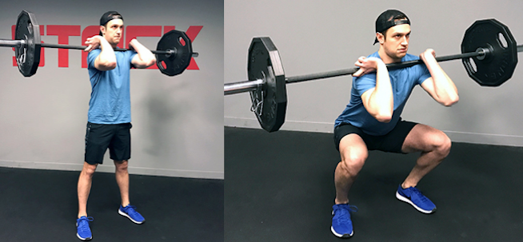

1.Load a barbell on your traps and stand with your feet shoulder-width apart. Your gaze should be ahead, your chest should be proud, and your toes should be pointed slightly out
2.Sit back into your hips, bend your knees, and drop down toward the floor. Ensure that your knees move slightly out, and do not collapse in
3.Lower until your thighs are parallel to the ground — or as far down as your mobility allows — then push back up to the starting position
Front squat

How to do it:
1.Load a barbell onto the front of your shoulders, hooking your fingers in an underhand grip on either side of your shoulders to support it. Push your elbows up and keep your gaze ahead.
2.Sit back into your hips, bend your knees, and lower down toward the floor. Ensure that your knees track out and your chest stays proud, resisting the pull to fall forward
3.Lower until your thighs are parallel to the ground — or as far down as your mobility allows — then push back up to the starting position.
Walking lunges-
How to do it:
1.Start with your feet together. Hold a dumbbell in each hand if you want to perform a weighted walking lunge.
2. Keeping your chest proud and gaze straight ahead, step forward, lunging with your right leg until your thigh is parallel to the ground
3. Push up through your right heel, coming back up to the starting position.
4. Continue forward with the left leg.
Lateral lunge
How to do it:
1. Start with your feet wider than hip-width apart.
2. Bend your left knee, sitting back into your left hip and keeping your torso upright. Keep your right leg as straight as possible, and lower down on your left leg until your knee forms a 90-degree angle.
3. Push back up to the starting position and repeat. Complete the desired number of reps on each side.
Reverse lunge
How to do it:
1. Stand with your feet shoulder-width apart and your arms down at your sides.
2. Step backward with your right foot, lunging until your left leg forms a 90-degree angle. Keep your torso upright.
3. Push back up through your left heel to the starting position.